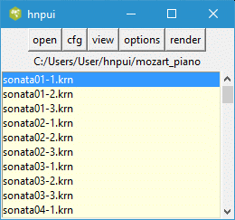
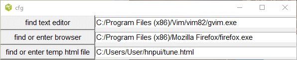
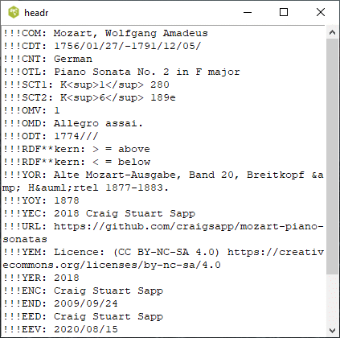
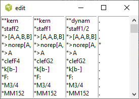
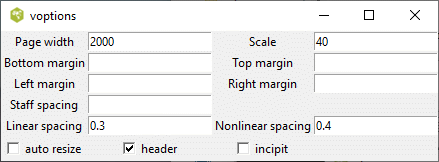
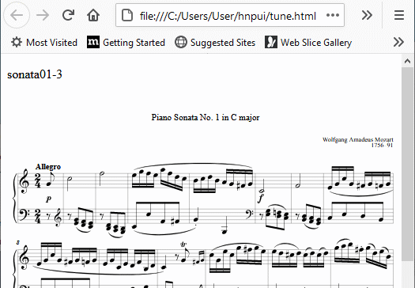

Documentation to this plugin can be found https://plugin.humdrum.org/. As described in the document, the Humdrum Notation Plugin creates music notation for web pages from Humdrum digital scores, either embedded within the same page or from an external source. This project contains the tcl/tk code which interfaces to the plugin. The user selects a kern file and presses the render button. The software produces a web page with the kern file embedded and exports this page to your browser. The web page downloads the JavaScript from an external site, which converts the kern file to Scaleable Vector Graphics which displays the music score.
This application provides a convenient way of displaying kern files on your browser and experimenting with the various options described in the documentation.
To run this software, you require Tcl/Tk the interpreter, either 8.5 or 8.6. This frequently comes with the Linux or OS operating system or can be easily installed. Details on acquiring this interpreter can be found on https://www.tcl.tk/software/tcltk/download.html if it is missing from your system.
It is suggested that you run this script in its own folder as the program will created an initialization file, hnpui.ini containing various configuration options. In addition, the program will create a temporary html file which will be sent to your browser.
To start this script in a terminal or command window, enter
wish hnpui.tclor double click on the hnpui.tcl file icon.
The rest of this document describes how to run this application.
This is the main window containing 5 buttons and a listbox containing the file names of all the kern files is a user chosen directory.

If you hover the mouse pointer on any of the buttons, a tooltip will pop up with an explanation of the buttons function. Clicking on any the buttons will cause another window to pop up. By default the new window is placed in the center of the screen and may obscure the main window. You should move the window to a new location and the program will remember this location for the next time you run this program.
You select the folder containing the kern files by clicking on the open button.
Before using this script, it is recommended that you open the cfg window which looks like this.

The program requires an internet browser like Firefox in order to display the kern file in common music notation. The Firefox browser comes with most Linux distributions, so it is sufficient to enter firefox in the entry box. For Windows 10, it will be necessary to indicate the full path to the browser executable -- for example.
"C:/Program Files (x86)/Microsoft/Edge/Application/msedge.exe"or
"C:/Program Files (x86)/Google/Chrome/Application/chrome.exe"
Note that even though the Windows file system uses back slashes to indicate the file path, this program requires that you use forward slashes. Tcl interprets the back slash character as something else.
You can use the button labeled find or enter browser to navigate to the binary of this browser. Similarly, the browser will require the full path to the temporary file (tune.html). You only need to do this once since this information will be stored in the text file hnpui.ini.
Clicking this button opens a file folder browser for selecting the folder containing your kern files. Note that once you open this folder, it will appear empty unless it contains other subfolders.
Clicking on the view button will pop up two windows similar to below. The header and tail of the selected kern file is shown in one window and the spines are displayed in separate listboxes in the other window. Presently, all you can do is to scroll down the window or close it when you are done. If the kern file contains spines which split into other spines, the contents will not line up correctly. More work is needed.


The Hnp script allows you to control the appearance of the rendered music using various options below.

Hovering the mouse pointer on the labels associated with any of these options will pop up a tooltip giving the default value and the allowable values for these options. If an entry box is blank, then the option and value will not be inserted into the web page and Hnp will substitute the default value.
